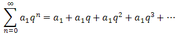
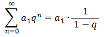

Najłatwiejsze w sumowaniu są szeregi geometryczne,
tzn. szeregi postaci:  Dla |
q|
< 1 zachodzi wzór:  Dla |
q| > 1
szereg geometryczny jest rozbieżny.
Dla innych szeregów dokładne obliczenie sumy
jest zazwyczaj zadaniem bardzo trudnym, dlatego przeważnie ograniczamy się jedynie do badania ich
zbieżności.
Okazuje się, że czasami można we w miarę prosty sposób obliczyć sumę szeregu
liczbowego, przy wykorzystaniu pewnych sprytnych metod. Metody te zostały omówione w rozwiązaniach wideo
poniższych zadań.